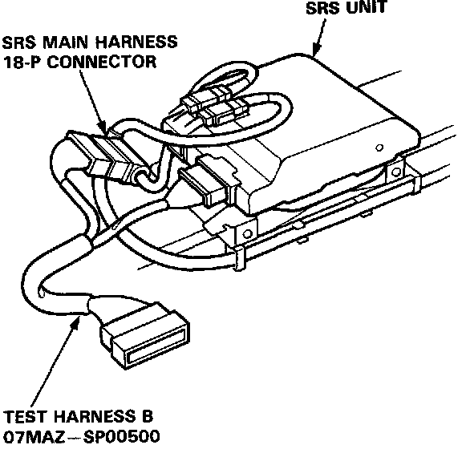
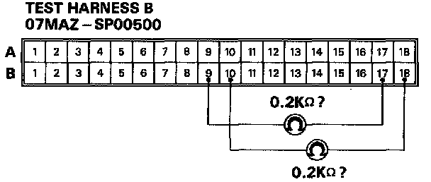
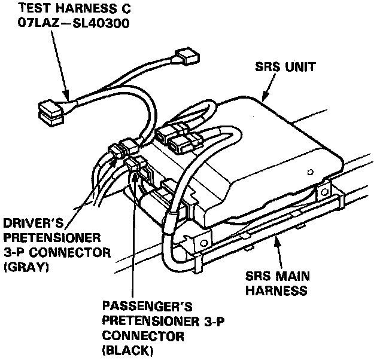
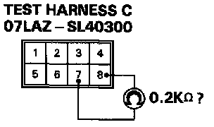
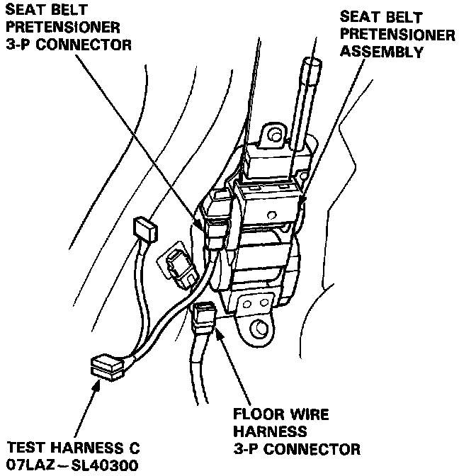
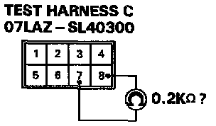

Mode G - Open In Seat Belt Pretensior
MODE G: OPEN IN SEAT BELT PRETENSIONER (DRIVER'S SIDE OR PASSENGER'S SIDE).1. Before disconnecting any part of the SRS wire harness, install the short connectors.
2. Connect Test Harness B between the SRS unit and SRS main harness 18-P connector.

NOTE: Reconnect the seat belt pretensioner 3-P connector for the following test.
3. Measure the resistance between the driver's seat belt pretensioner terminals B9 and B17, and between the passenger's seat belt pretensioner terminals B1O and B18.

- If resistance is more than 0.2 K Ohms, go to step 4.
- If resistance is less than 0.2 K Ohms, the SRS unit is faulty. Substitute a known-good SRS unit and recheck the voltages.
4. Disconnect the driver's and passenger's pretensioner connectors between the SRS main harness and floor wire harness. First, connect Test Harness C (O7LAZ-SL40300) to the floor wire harness side of the driver's pretensioner 3-P connector, and check resistance, then connect it to the floor wire harness side of the passenger's pretensioner 3-P connector, and check resistance again.

5. Measure the resistance between the No.7 terminal and the No.8 terminal.

- If resistance is more than 0.2 K Ohms, go to step 6.
- If resistance is less than 0.2 K Ohms, the SRS main harness is faulty. Replace it and recheck the voltages.
6. Disconnect the 3-P connector from the driver's and passenger's seat belt pretensioners, then connect Test Harness C (O7LAZ-SL40300) to the seat belt pretensioner side of the connector, first on the driver's side, then on the passenger's side.

7. Measure the resistance between the No.7 terminal and the No.8 terminal.

- If resistance is more than 0.2 K Ohms, the seat belt pretensioner is faulty. Replace it and recheck the voltages.
- If resistance is less than 0.2 K Ohms, the floor wire harness is faulty. Replace the faulty harness and recheck the voltages.